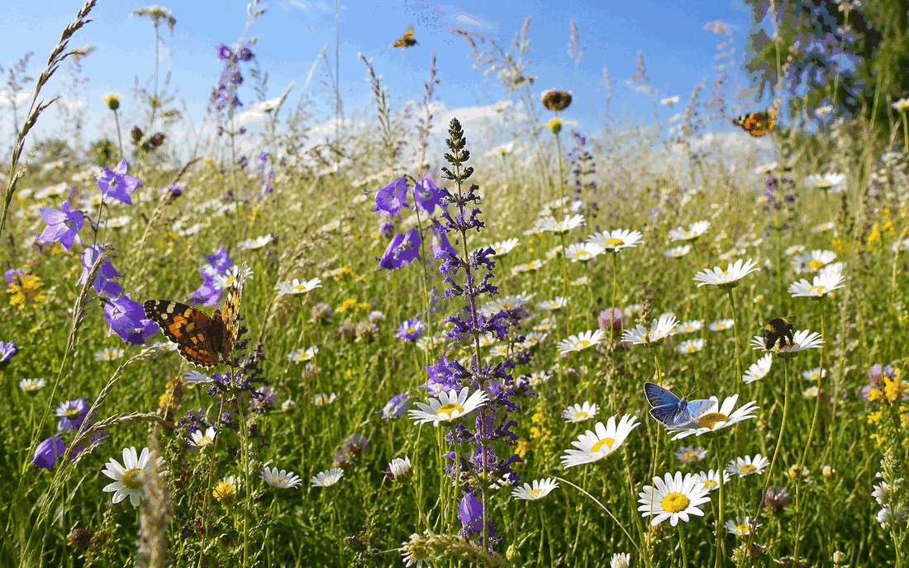

‹ bio.mibaso
🦋
Fauna Mibaso

Dein Forscherpass
Sammle Blätter, werde Wiesen-Meister
Alle fünf Pfade an einem Ort — mit deinem Fortschritt.
›
Bestimmen & Verwandtschaft
Was kreucht und fleucht denn hier?
Lernpfad
›
Systematik & Ränge
Lernpfad
›
Stammbaum der Tiere
Lernpfad
›
Verwandlung & Bestäubung
Verwandlung
Lernpfad
›
Wer bestäubt was?
Lernpfad
›
Wiese & Lebensraum
Was brauchen Insekten wirklich?
Lernpfad
›
Wer frisst wen?
Lernpfad
›
Die Wiese lebt
Lernpfad
›
Wo sind die Insekten geblieben?
Übersicht
›